Lab 7: Kalman Filter
Task 1 Estimate Drag and Momentum
To implement a Kalman filter, the system must first be modeled. The following equations illustrate how the dynamic equations are derived, where x represents the distance from the robot to the wall, u is the control input, and the unknown parameters are d (the drag coefficient) and m (the inertia coefficient).
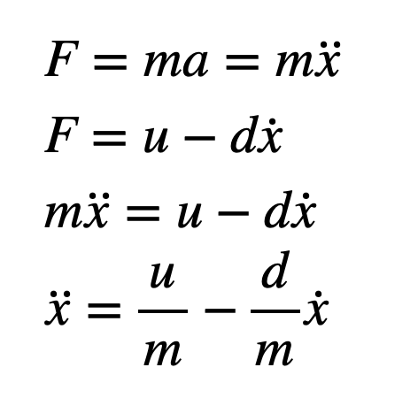
According to the following formula, when the robot accelerates from rest to steady state, the acceleration is 0. And if we normalize u to 1, we can calculate d as long as we know the velocity when the steady state is reached.
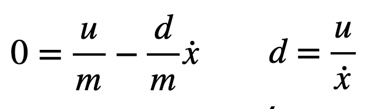
Our system has a first-order exponential rising curve. By finding the rise time to reach 90% steady-state velocity, we can calculate m.
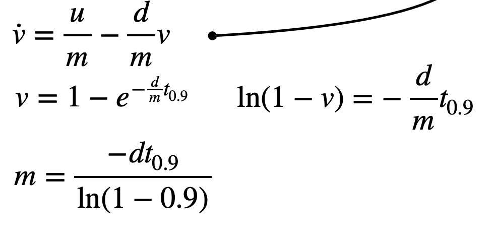
Finally, after determining d and m, the state-space equations of the robot can be derived.
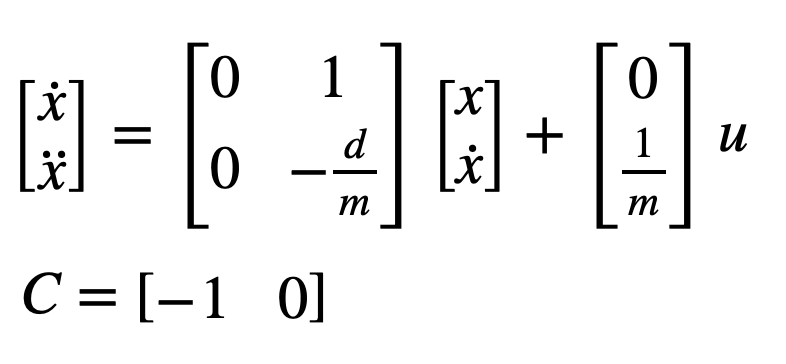
I drove the robot toward a wall from a distance of 4 meters, operating at 55% of the maximum PWM speed, and generated a graph depicting the relationship between velocity and time.
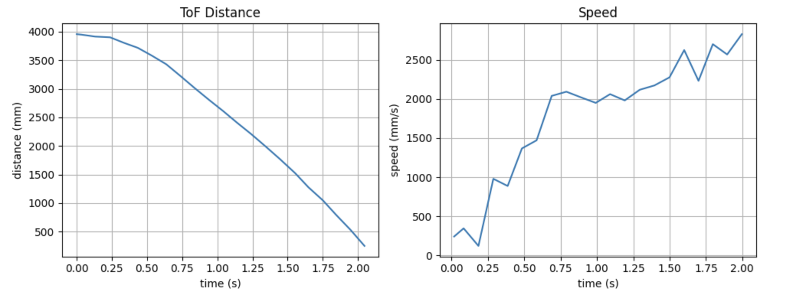
Note that after 1.5 seconds, the robot collided with the wall, causing fluctuations in its velocity. I observed that the robot reached a steady-state velocity at approximately 0.75 seconds; therefore, I calculated the average velocity for the time interval between 0.75 and 1.25 seconds, and subsequently determined the time required to reach 90% of this average velocity, as illustrated in the figure below.
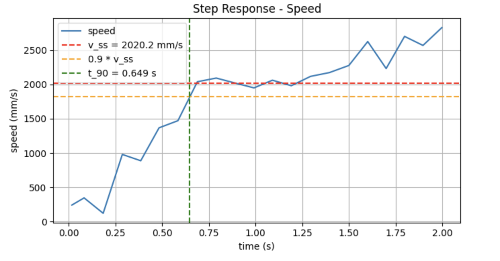
Through calculation, I obtained d = 0.000495 and m = 0.000139.
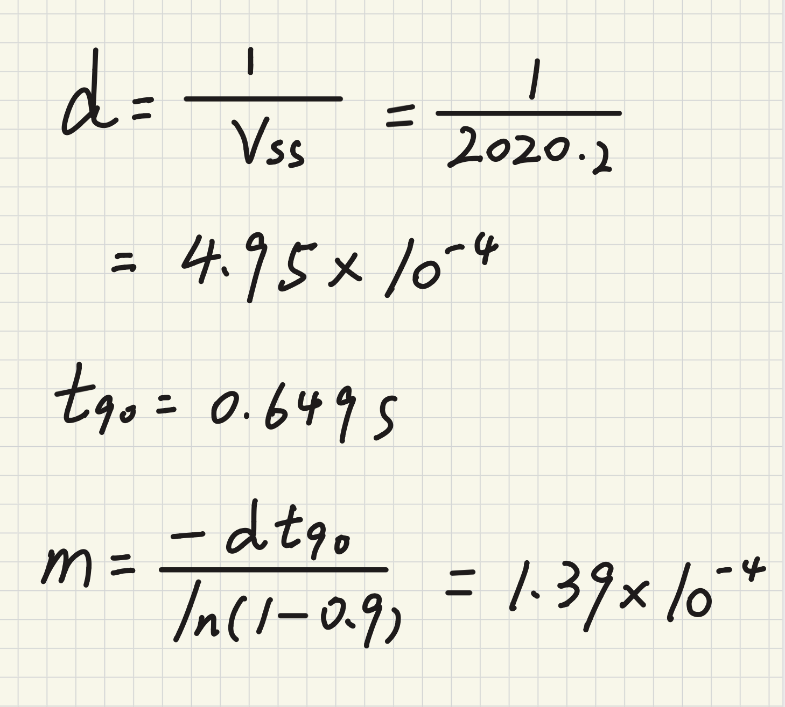
Task 2 Initialize KF
With the values for d and m, I can therefore calculate matrices A and B; however, since both the commands we transmit and the data we receive are discrete rather than continuous, it is necessary to discretize matrices A and B.
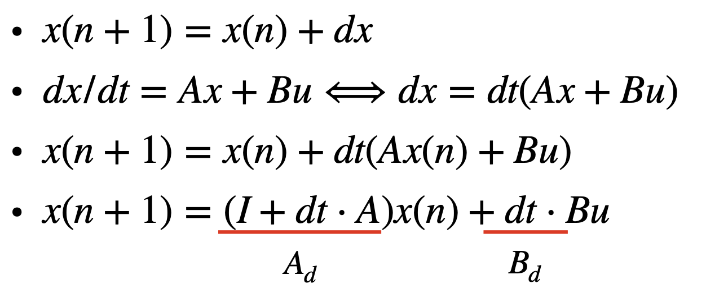
In lab5, I obtained the control loop time dt as 9ms, and the discretized Ad and Bd matrices are calculated as follows.
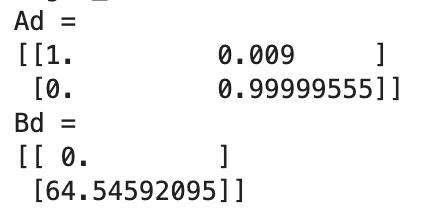
Next, the system needs to be configured with process noise sigma1 and sigma2 for position and velocity, as well as measurement noise sigma3. The calculation code is as follows. Here, I used 0.02 for dx, which represents a measurement error of 20mm. Calculated sigma1 = sigma2 = 105.41, sigma3 = 70.71.
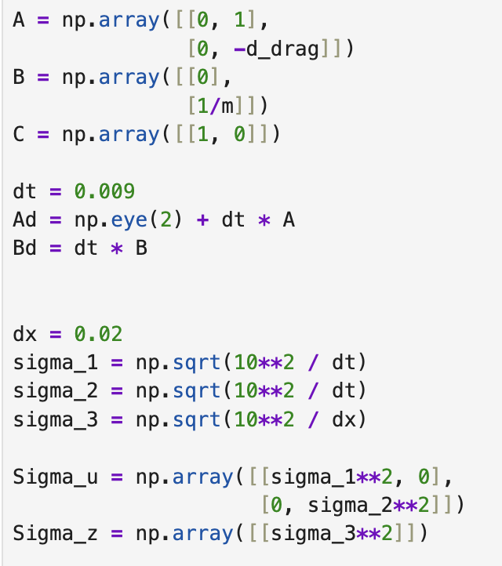
Task 3 Implement and Test KF in Python
Below is my corresponding control code. Like lab5, I selected 5 seconds as the sampling time.

Based on the Kalman Filter equations, I used the code provided in the Lab Instructions to implement the Kalman filter, as follows:
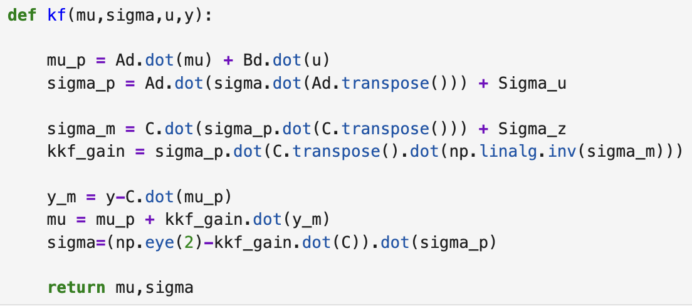
Subsequently, I used the data from Lab 5 to test the performance of the Kalman filter. Based on our chosen parameters, our system places slightly greater trust in the measurement data. The results are shown below; as can be seen, the fitting performance is excellent, so this set of parameters can be applied to the robot.
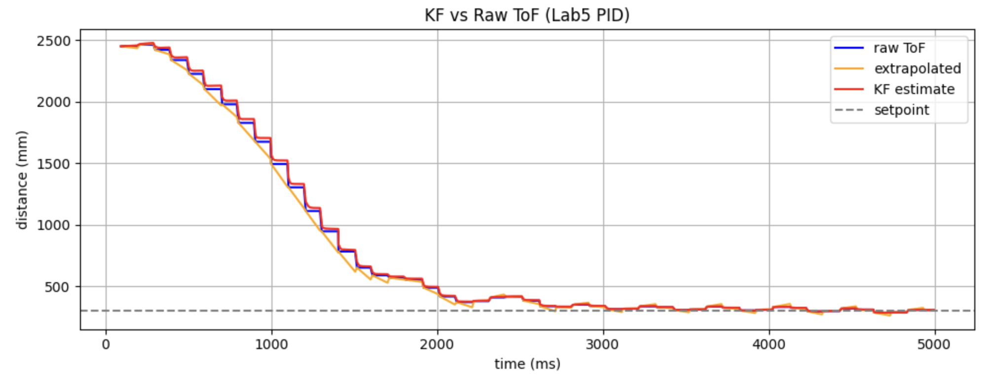
Task 4 Implement KF on Robot
I modified the PID control function in Lab 5, replacing the linear extrapolation with a Kalman filter. Specifically, whenever a new TOF value becomes available, I use that new value to perform both the prediction and update steps; conversely, when no new TOF value is received, I utilize the previous value for these steps, thereby preventing the sigma value from diverging.
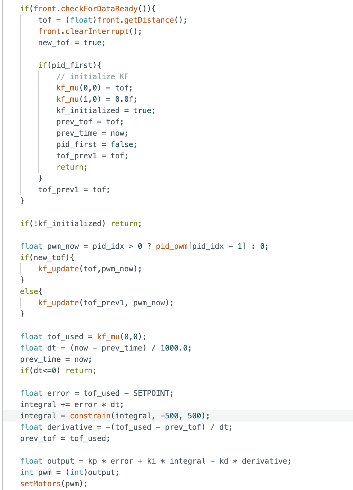
Visualizing the data reveals that the Kalman filter is highly effective; a demonstration video is provided below.
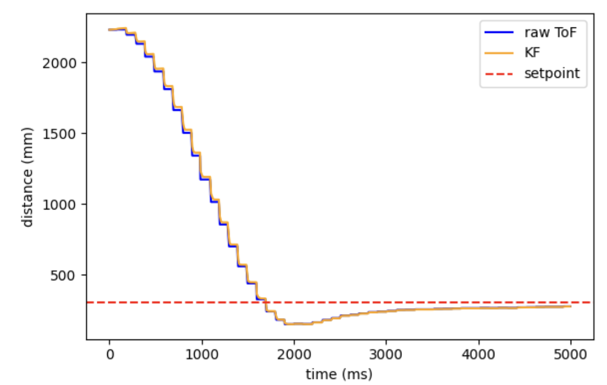
Statement
I got much help from Yueming Liu's page.